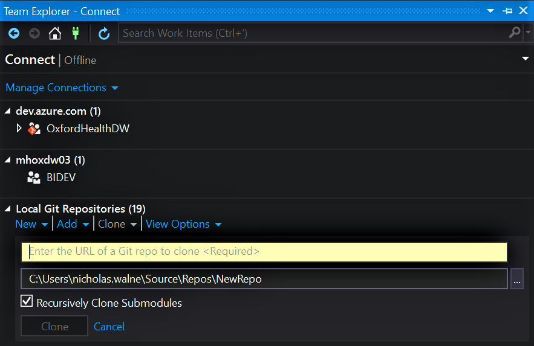
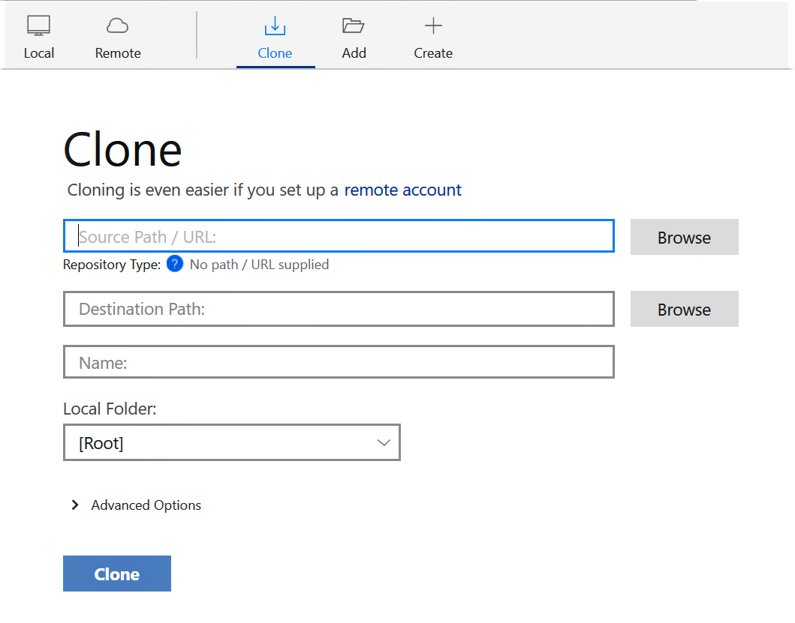
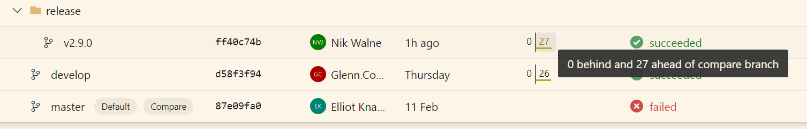
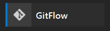
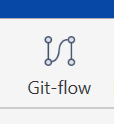
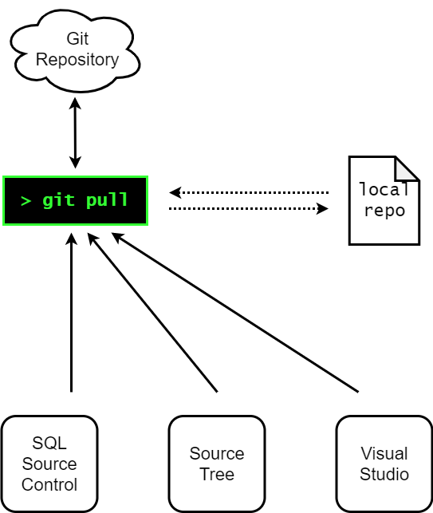
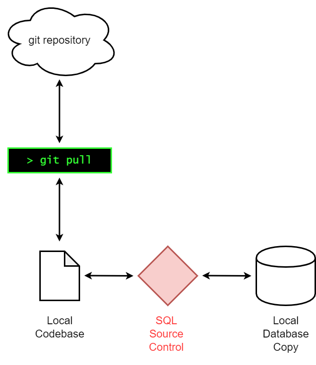
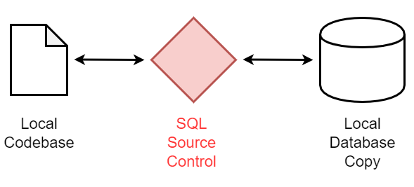
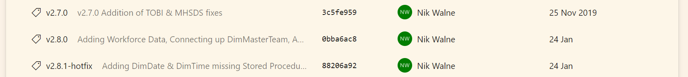

How we Git
A somewhat quick run through of BI development
What
Why
What we going to do
- Grab a code base from repository
- Create a new feature branch
- Make some changes to code
- Finish the feature branch; merge back to develop branch
- Create a release candidate, and release new version
Before We Start
-
All code will be put up on my personal git https://github.com/niknudge/pres
-
This will also be put up on Azure DevOps
-
This is a surface look at our development process, at just git (and some cross over with SQL Clone & SQL Source Control)
-
You can also return to this presentation [link tbc…]
Getting the Repo

Downloading Repo
Visual Studio
Downloading Repo
CLI
> git clone https://OxfordHealthBI@dev.azure.com/OxfordHealthBI/OxfordHealthDW/_git/OxfordHealthDW
Downloading Repo
SourceTree
Downloading Repo
What We’ve Done
Common git Terms
Clone - Download the codebase from repo
Pull - Update local copy with changes on repo
Commit - Bundle code changes with a message
Push - Uploads commits to repo
Sync (VS Only) - Pulls, then Pushes
Branch - Copy of codebase at a different state
Checkout - Switch to a different branch
Branches

Branching Stategies
We follow a method of branching named “Gitflow”, based on an initial blog post by nvie
Which recommends 2 permanent branches; master and develop that reflect a production state and development state respectively
Gitflow

Gitflow
- New development occurs in
feature/merged back intodevelop release/branched from develop, merged intomasterand back intodevelop
Gitflow Tools
Gitflow is so popular that it has its own plugin for git. This allows you to simplify each of the common steps that occur in day to day development.
> git flow feature start <featurename>
> git flow feature finish <featurename>
Gitflow Tools
Gitflow is also built into many other tools
 
When we first clone a repository, we need to initiate with gitflow, the GUI tools prompt you to do this

Then what?
- Make Changes
- Create Commits
- Push Changes
- Repeat … KEEP CODING


Releases
Releases follows the gitflow process to merge development code into master
Follows much of the same as creating and finishing features
Except
Finishing a feature leaves 2 sets of commits
- One for
develop - One for
master
This is to ensure that any codew changes that occur when people are looking at the release branch (i.e. UAT testing flagging bugs) are merged with both production and development systems

Pulling
Pulling is the defacto thing you should be doing if not developing
Pulling lets your local copy of the code repository know what updates have been occuring on the repository
It Doesn’t matter where we pull from
All pulls made, no matter the software, calls the git command & update the local codebase
How BI Do it with other tools
Other things that fit in with our git workflow:
- Redgate SQL Source Control
- Redgate SQL Provision (SQL Clone)
SQL Source Control
Works as a go-between for the Database & the plaintext interpretation.
Be aware
SQL Provision
This gives up a database to work with
What we don’t see
When we use gitflow for release/ & hotfix/ branches, it will also create a tag with the same name (i.e release/v2.8.0 creates a tag v2.8.0)
These tags form points in the git history.

How we don’t do it
Branching stategies
Whilst gitflow is popular, it’s by no means perfect:
- Top level view can be confusing
- Easy to drift away from master branch
- Harder to follow other git “best practices”
Many articles discuss the pros and cons of other stategies used commonly
Pull Requests
Pull requests let you tell others about changes you’ve pushed to a GitHub repository. Once a pull request is sent, interested parties can review the set of changes, discuss potential modifications, and even push follow-up commits if necessary.
More in-depth
Github provides a very large Learning Lab that’ll reinforce the base concepts as well as more advanced stuff
Atlassian provides a clear overview of the gitflow process as well
Many Thanks
Questions?